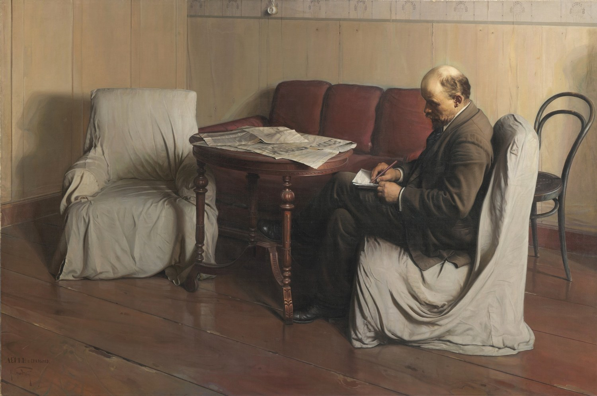
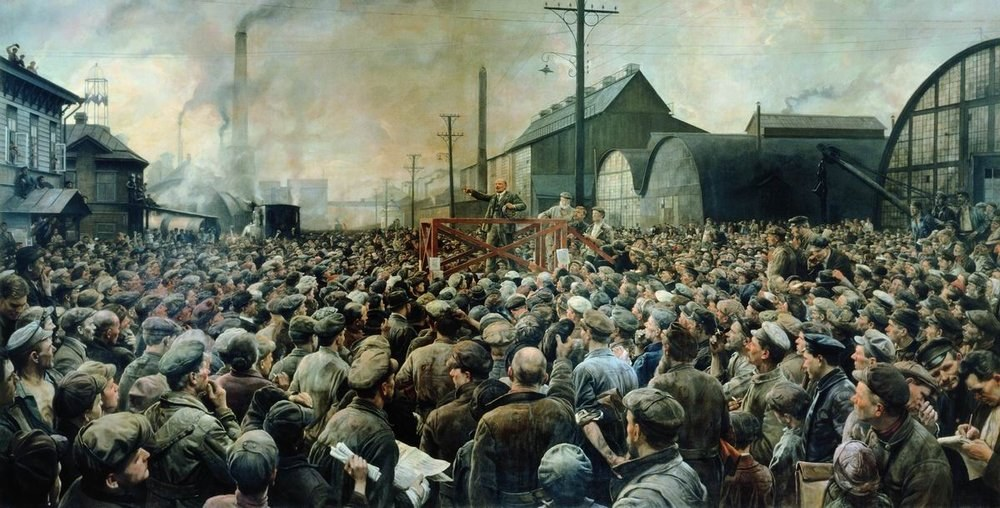
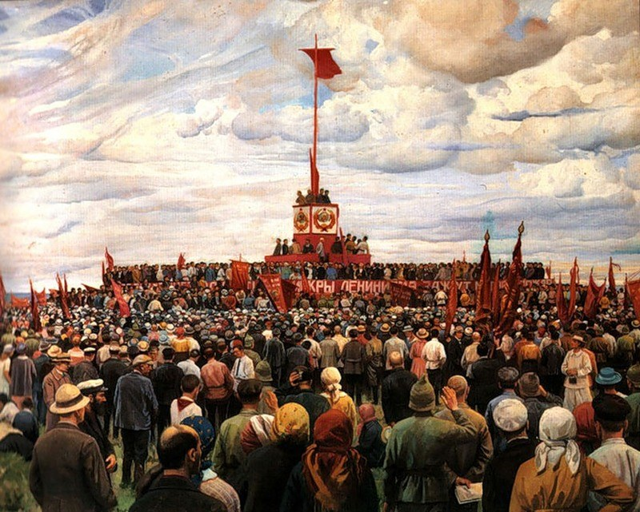

지도자의 노동
사회주의적 사실주의(Socialist Realism, 보통 사회주의 리얼리즘 또는 사회주의 사실주의라고도 함)는 1930년대 소련에서 국가가 공식적으로 요구한 예술·문학의 창작 원리이다. 형식적으로는 알아보기 쉬운 사실적 재현을 사용했지만, 핵심은 단순한 객관적 기록이 아니었다. 현재의 현실을 혁명과 사회주의 건설이 향하는 미래의 관점에서 해석하고, 노동자·농민·지도자·산업·군대·집단을 긍정적이고 교육적인 방향으로 제시하는 것이 중요했다.
참고 학습
사회주의적 사실주의는 1930년대 소련에서 제도화되어 사회주의 국가의 공식 문화 정책으로 확산된 규범이다. 현실의 고난을 그대로 기록하기보다 당과 국가가 지향하는 낙관적 미래를 이해하기 쉬운 영웅적 구상으로 제시했다.
구성주의의 실험적 추상과 생산 미학을 공식적 구상 서사로 대체했고, 사회적 사실주의와 달리 국가 기관이 허용되는 형식과 주제를 강하게 규정했다.
흔한 오해: 사회주의 사회에서 제작된 사실적 작품이 모두 사회주의적 사실주의는 아니다. 공식 교리와 기관의 통제, 이상화된 미래 지향이 중요한 기준이다.
아니다. 하나의 붓질이나 색채 방식이라기보다 국가가 예술의 내용·사회적 기능·이념적 방향을 규정한 창작 원리에 가깝다. 그래서 회화뿐 아니라 문학·영화·조각·건축·음악 등 여러 분야에 적용되었다.
대중이 즉시 알아볼 수 있는 인물·장소·사건을 선호했다.
지금의 어려움을 그대로 끝내지 않고 사회주의적 발전의 과정으로 제시한다.
노동자·농민·군인·지도자가 모범적이고 목적의식적인 인물로 나타난다.
갈등과 고난이 있어도 최종 방향은 건설·승리·발전으로 향하는 경우가 많다.
예술은 사회주의적 가치와 집단적 정체성을 형성하는 수단으로 간주되었다.
혁명 후 여러 전위예술과 사실주의 계열이 동시에 경쟁하며 새로운 사회의 미술을 모색한다.
구성주의·절대주의·생산주의뿐 아니라 사실적 노동자 미술도 함께 존재했다.
당의 결정으로 독립적인 문학·예술 단체들이 해산되고 분야별 단일 창작자 조직으로 통합되는 방향이 확립된다.
제1차 소비에트 작가대회에서 사회주의 리얼리즘이 공식 창작원리로 제시된다.
지도자·산업화·집단농장·군사적 영웅주의와 밝은 미래의 이미지가 강하게 제도화된다.
스탈린 사후 공식 체계는 유지되지만 시대와 지역에 따라 보다 다양한 현실 묘사가 가능해진다.
극단적 추상이나 형식 실험보다 사람·기계·공장·농촌을 대중이 쉽게 식별할 수 있는 방식으로 그리는 것을 선호했다.
현실의 모순을 정지된 현재로만 보여주기보다 사회주의가 그것을 극복해 나가는 역사적 과정으로 해석했다.
관람자가 사회주의 사회의 가치·노동·집단·영웅적 행동을 긍정적으로 받아들이도록 하는 교육적 기능이 요구되었다.



| 주제 | 전형적인 표현 방식 | 의미 |
|---|---|---|
| 노동자와 공장 | 건강한 신체, 거대한 기계, 밝은 공장, 협동하는 노동 | 산업화와 노동의 영웅화 |
| 농민·집단농장 | 풍요로운 수확, 트랙터, 집단노동 | 농업의 현대화와 사회주의적 집단성 |
| 지도자 | 레닌·스탈린을 노동자와 함께하거나 국가를 이끄는 인물로 제시 | 정치적 정당성과 지도자 숭배 |
| 청년·스포츠 | 건강하고 활기찬 젊은이, 운동과 기술 | 새로운 소비에트 인간의 이상 |
| 군인·전쟁 | 희생·동료애·승리의 서사 | 국가 방어와 집단적 영웅주의 |
| 과학·산업·미래 | 항공기, 건설현장, 발전소, 도시 | 기술과 진보에 대한 낙관 |
| 항목 | 이동파 / 19세기 러시아 사실주의 | 사회주의적 사실주의 |
|---|---|---|
| 제도적 위치 | 제국미술아카데미의 권위에 맞선 독립 전시운동 | 소련 국가가 공식적으로 승인·제도화한 창작원리 |
| 현실의 태도 | 빈곤·불평등·사회문제를 비판적으로 보여줄 수 있음 | 문제를 보여주더라도 사회주의적 발전과 극복의 전망이 요구됨 |
| 주인공 | 농민·노동자·지식인·역사적 인물 등 매우 다양 | 모범 노동자·집단·혁명 지도자·군인 등 ‘긍정적’ 인물이 중요 |
| 권력과 관계 | 비판적·독립적 성격 | 공식 국가문화와 긴밀한 관계 |
| 미래관 | 현재의 현실을 관찰·비판 | 현재를 이상적 미래로 향하는 역사적 과정으로 해석 |
| 항목 | 러시아 아방가르드 | 사회주의적 사실주의 |
|---|---|---|
| 형식 | 추상·비대상·포토몽타주·실험적 공간 | 대중이 쉽게 이해할 수 있는 재현적 형식 |
| 예술의 혁명 | 미술 자체의 언어와 생산체계를 새로 만들려 함 | 명료한 이미지로 사회주의적 가치와 역사를 전달 |
| 대표 | 말레비치, 타틀린, 로드첸코 등 | 브로드스키, 데이네카, 게라시모프 등 |
| 1930년대 | 독립적인 전위실험의 제도적 공간이 급격히 축소 | 공식 미술의 중심이 됨 |
정치 선전 기능이 매우 컸다는 것은 분명하지만, 사회주의적 사실주의 전체를 단순히 ‘포스터 같은 선전’으로 축약하면 작품 간 차이를 놓치게 된다.
국가 이념·지도자·산업화·집단주의를 긍정적으로 제시하는 작품이 많았고 검열과 제도적 통제가 작동했다.
화가마다 구도·색채·심리묘사·현대성의 정도가 달랐으며 시대가 지나면서 공식 기준 내부에서도 다양한 변형이 나타났다.
미술사적으로는 단순한 선전장르보다 국가가 제도화한 재현·서사·사회적 기능의 체계라고 이해하는 편이 정확하다.
제2차 세계대전 이후 사회주의 리얼리즘은 동유럽 사회주의 국가를 비롯해 중국·북한·베트남 등 여러 사회주의 국가의 공식 또는 지배적 미술에 큰 영향을 미쳤다. 그러나 각 나라에서는 기존의 민족미술·역사·정치환경과 결합하면서 서로 다른 형태로 변형되었다.
| 국가·지역·세부 사조 | 지역적 특징 | 대표 화가·제작자 | 더 볼 화가 |
|---|---|---|---|
| 러시아 — 사회주의적 사실주의 |
| 알렉산드르 데이네카 | 베라 무히나, 이사크 브로츠키 |
사회주의 사실주의는 단순히 사실적으로 그리는 방식이 아니라, 현실을 사회주의 미래로 나아가는 낙관적 과정으로 보여주도록 한 국가 공식 미술 원칙이다.
본문에 이름이 등장하는 주요 화가는 아래처럼 대표작 한 점과 함께 읽어야 한다. 작품은 해당 사조의 핵심 특징을 실제 화면에서 확인하도록 고른 것이다.
선정 이유: 데이네카는 구성주의적 리듬과 읽기 쉬운 집단 영웅 서사를 결합해 사회주의적 사실주의로 이행하는 특징을 보여 준다.
무장 노동자의 행렬과 부상병의 귀환이 위아래 두 띠에서 반대 방향으로 움직인다. 단순한 실루엣과 반복 리듬은 혁명 공동체를 개인보다 앞세우며 국가적 서사의 명료성을 만든다.
더 볼 이유: 무히나는 사회주의적 사실주의가 이상화된 노동자 집단을 국가적 기념물로 만드는 방식을 보여 준다.
앞으로 내딛는 거대한 남녀와 낫·망치는 집단적 진보를 명료하게 전달하는 이 사조의 특징을 드러낸다. 스테인리스강의 반사와 대각선 운동으로 산업적 현대성을 강조한 점은 무히나만의 특성이다.
더 볼 이유: 브로츠키는 사회주의적 사실주의가 혁명 지도자의 이미지를 사실적이고 권위 있는 국가 표상으로 정착시킨 과정을 보여 준다.
정돈된 사무실과 집중한 자세는 지도자를 근면하고 절제된 인물로 제시한다. 아카데미식 정밀함을 정치적 정통성의 이미지로 전환한 점은 브로츠키만의 특성이다.